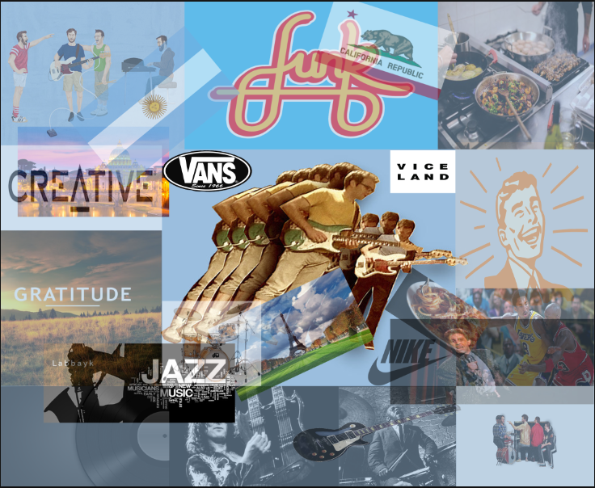
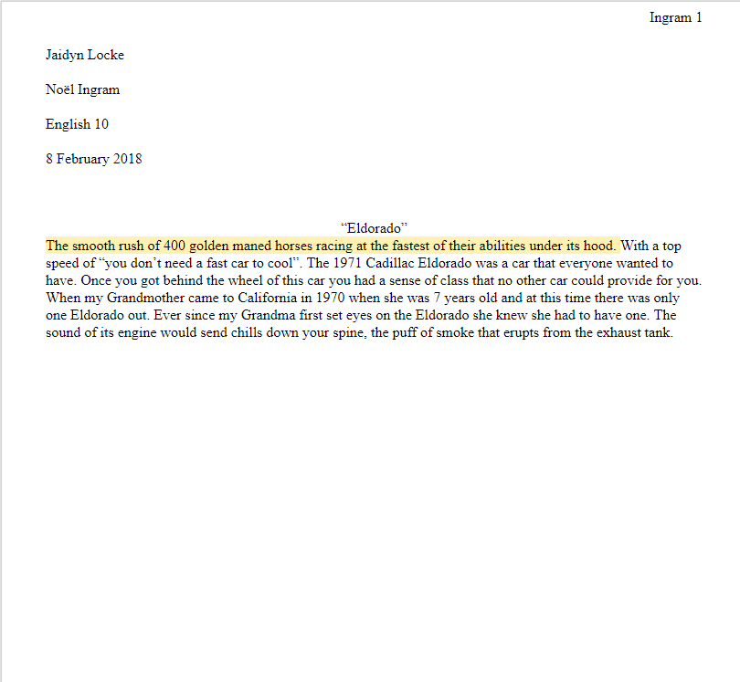

Welcome to Noel's page. on this page you can see my yeabook assignment and my essay.

The image below is my self portrait. We had to gather other images that show our character trait, what we are interested in and put them into a collage on Adobe Photoshop. My main character traits were creativity, gratitude, and humor. I also chose music that I like, Hobbies, and sports that i like to do.
The image below is my essay from my coding the past interview. As you can see I don't have much written but we were supposed to take something from our interview like a memory or like a favorite food. In my case I chose my grandmothers first car and i used imagery and similies to explain parts of the car.
